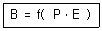
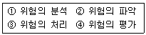
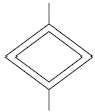
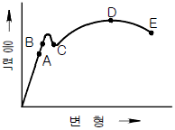
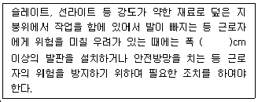
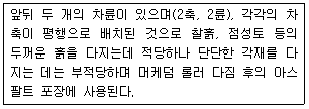

건설안전산업기사 (2010-03-07 기출문제)
1과목: 산업안전관리론
1. 다음 중 교육훈련의 평가방법의 종류가 아닌 것은?
- 관찰법
- 면접법
- 실연법
- 자료분석법
(정답률: 66%)

2. 밀폐작업공간에서 유해물과 분진이 있는 상태에서 작업 할 때 가장 적합한 보호구는?
- 방진마스크
- 방독마스크
- 송기마스크
- 보안경
(정답률: 50%)
3. 재해 통계적 원인 분석시 사고의 유형, 기인물 등 분류 항목을 큰 순서대로 도표화한 것은?
- 파레토도
- 특성요인도
- 크로스도
- 관리도
(정답률: 65%)
4. 레윈(Lewin)은 인간행동과 인간의 조건 및 환경조건의 관계를 다음과 같이 표시하였다. 이 때 " f " 를 설명한 것으로 옳은 것은?

- 행동
- 조명
- 지능
- 함수
(정답률: 76%)
5. 재해예방대책의 기본원리 5단계 중 제4단계의 내용으로 적절하지 않은 것은?
- 기술적인 개선
- 작업배치의 조정
- 교육훈련의 개선
- 작업 분석 및 평가
(정답률: 57%)
6. 강의 계획에 있어 학습목적의 3요소에 해당되지 않는 것은?
- 목표
- 주제
- 학습내용
- 학습정도
(정답률: 39%)
7. 작업을 하고 있을 때 걱정거리, 고민거리, 욕구불만 등에 의해 다른데 정신을 빼앗기는 부주의 현상은?
- 의식의 중단
- 의식의 우회
- 의식수준의 저하
- 의식의 과잉
(정답률: 74%)
8. 다음 중 산업안전보건법상 특별안전ㆍ보건교육 대상 작업이 아닌 것은?
- 건설용 리프트ㆍ곤돌라를 이용한 작업
- 전압이 50볼트인 정전 및 활선작업
- 화학설비 중 반응기, 교반기ㆍ추출기의 사용 및 세척 작업
- 액화석유가스ㆍ수소가스 등 인화성 가스 또는 폭발성 물질 중 가스의 발생장치 취급 작업
(정답률: 64%)
9. 다음 중 산업심리의 5대 요소가 아닌 것은?
- 동기
- 지능
- 감정
- 습관
(정답률: 49%)
10. 의사결정 과정에 따른 리더십의 유형 중에서 민주형에 속하는 것은?
- 집단 구성원에게 자유를 준다.
- 지도자가 모든 정책을 결정한다.
- 집단토론이나 집단결정을 통해서 정책을 결정한다.
- 명목적인 리더의 자리를 지키고 부하직원들의 의견에 따른다.
(정답률: 61%)
11. 안전교육훈련의 기법 중 교시법의 4단계를 올바르게 나열한 것은?
- 실연 → 도입 → 실습 → 확인
- 확인 → 도입 → 실연 → 실습
- 도입 → 실연 → 실습 → 확인
- 도입 → 실습 → 실연 → 확인
(정답률: 56%)
12. 다음 중 무재해 운동의 이념 3원칙과 거리가 먼 것은?
- 무의 원칙
- 자주활동의 원칙
- 참가의 원칙
- 선취 해결의 원칙
(정답률: 61%)
13. 무재해운동의 추진기법 중 위험예지훈련의 4라운드에서 제3단계 진행방법에 해당하는 것은?
- 목표설정
- 현상파악
- 본질추구
- 대책수립
(정답률: 67%)
14. 다음 중 평균 근로자 수가 1000명 이상의 대규모 사업장에 가장 적합한 안전조직은?
- 라인(line)형 안전조직
- 스태프(staff)형 안전조직
- 라인-스태프(line-staff)형 혼합조직
- 생산부서장의 안전책임자 겸직조직
(정답률: 75%)
15. 다음 중 안전교육의 3요소로만 이루어진 것은?
- 강사, 수강자, 교재
- 강사, 교재, 교육장소
- 수강자, 교재, 교육시설
- 강사, 인간관계, 교재
(정답률: 71%)
16. 기계ㆍ기구 또는 설비의 신설, 변경 또는 고장 수리 등 부정기적인 점검을 말하며 기술적 책임자가 시행하는 점검을 무슨 점검이라 하는가?
- 정기점검
- 수시점검
- 특별점검
- 임시점검
(정답률: 59%)
17. 맥그리거(Mcgregor)의 X이론과 Y이론 중 Y이론에 해당되는 것은?
- 인간은 서로 믿을 수 없다.
- 인간은 태어나서부터 악하다.
- 인간은 정신적 욕구를 우선시 한다.
- 인간은 통제에 의한 관리를 받고자 한다.
(정답률: 58%)
18. 재해의 간접원인 중 관리적 원인에 해당하는 것은?
- 작업지시 부적절
- 안전수칙의 오해
- 경험훈련의 미숙
- 안전지식의 부족
(정답률: 61%)
19. 연간 근로자수가 500명인 A 공장에서 지난 1년간 발생한 5건의 재해로 인하여 신체장해등급이 1급 1명, 14급 5명이 발생하였다. 이 공장의 강도율은 약 얼마인가? (단, 근로자 1인당 1일 8시간씩 연간 300일을 근무하였다.)
- 4.17
- 6.46
- 10
- 12
(정답률: 40%)
20. 산업안전보건법상 안전ㆍ보건표지 중 폭발성물질경고의 색채에 관한 설명으로 옳은 것은?
- 바탕은 파란색, 관련 그림은 흰색
- 바탕은 무색, 기본모형은 빨간색
- 바탕은 흰색, 기본모형 및 관련 부호는 녹색
- 바탕은 노란색, 기본모형, 관련 부호 및 그림은 검은색
(정답률: 59%)
2과목: 인간공학 및 시스템안전공학
21. 통제기기에서 통제기기의 변위를 15mm 움직였을 때 표시계기의 지침이 25mm 움직였다면 이 기기의 통제 표시비(C/D비)는 얼마인가?
- 0.4
- 0.5
- 0.6
- 0.7
(정답률: 61%)
22. 다음 중 작업설계를 함에 있어서 작업만족도를 얻기 위한 수단으로 볼 수 없는 것은?
- 작업 순환
- 작업 분석
- 작업 윤택화
- 작업 확대
(정답률: 26%)
23. 다음 중 암호체계 사용상의 일반적인 지침에서 “암호의 변별성”을 의미하는 것으로 가장 적절한 것은?
- 암호화한 자극은 감지장치나 사람이 감지할 수 있어야 한다.
- 모든 암호의 표시는 다른 암호 표시와 구분될 수 있어야 한다.
- 암호를 사용할 때에는 사용자가 그 뜻을 분명히 알 수 있어야 한다.
- 두 가지 이상의 암호 차원을 조합해서 사용하면 정보 전달이 촉진된다.
(정답률: 56%)
24. 다음 중 수공구의 일반적인 설계 원칙과 거리가 먼 것은?
- 손목은 곧게 유지되도록 설계한다.
- 손가락 동작의 반복을 피하도록 설계한다.
- 손잡이는 손바닥과의 접촉면적이 작게 설계한다.
- 공구의 무게를 줄이고 사용시 균형이 유지되도록 한다.
(정답률: 63%)
25. 다음 중 출력되는 값을 정확히 읽어야 하는 경우에 가장 적합한 시각적 표시장치의 형태는?
- 동침형
- 동목형
- 수직형
- 계수형
(정답률: 61%)
26. 다음 중 결함수분석법(FTA)에 관한 설명으로 틀린 것은?
- 최초 watson이 군용으로 고안하였다.
- 미니멀 패스(minimal path sets)를 구하기 위해서는 미니멀 컷(minimal cut set)의 상대성을 이용한다.
- 정상사상의 발생확률을 구한 다음 FT를 작성한다.
- AND 게이트의 확률 계산은 입력사상의 곱으로 한다.
(정답률: 48%)
27. 다음 중 정보의 측정단위인 bit 를 올바르게 설명한 것은?
- 실현가능성이 같은 2개의 대안 중 하나가 명시되었을 때 얻는 정보량
- 실현가능성이 같은 4개의 대안 중 하나가 명시되었을 때 얻는 정보량
- 실현가능성이 같은 8개의 대안 중 하나가 명시되었을 때 얻는 정보량
- 실현가능성이 같은 16개의 대안 중 하나가 명시되었을 때 얻는 정보량
(정답률: 56%)
28. 광도(luminance)는 단위면적당 표면에서 반사되는 광량(光量)을 말한다. 다음 중 광도의 단위가 아닌 것은?
- Lambert(L)
- candle-Lambert(cdL)
- foot-Lambert
- nit(cd/m2)
(정답률: 30%)
29. 3개의 서로 다른 부품이 OR gate에 연결된 FTA 모델이 있다. 각 부품의 고장확률은 0.2 이고, “시스템이 작동 안됨” 을 정상사상(top event)으로 했을 때 정상사상이 발생할 확률은 얼마인가?
- 0.008
- 0.488
- 0.512
- 0.992
(정답률: 40%)
30. 다음 중 예비위험분석(PHA)에 관한 설명으로 가장 적절한 것은?
- 시스템안전 위험분석을 수행하기 위한 예비적인 최초의 작업으로 위험요소가 얼마나 위험한지를 평가한다.
- 손실과 인명의 사상에 연결되는 높은 위험도를 가진 요소나 고장의 형태에 따른 분석법이다.
- 각 서브시스템 및 전 시스템의 안전성이 악영향을 끼치지 않게 하기 위한 분석기법이다.
- 원자력 발전과 같이 관리, 설계, 생산, 보존 등에 대해서 광범위하게 안전성을 확보하기 위한 기법이다.
(정답률: 61%)
31. 인간공학의 연구 방법에서 체계 개발에 있어 사용될 수 있는 인간기준이 아닌 것은?
- 인간성능 척도
- 객관적 반응
- 생리학적 지표
- 사고 빈도
(정답률: 37%)
32. 다음 중 진동이 인간 성능에 미치는 일반적인 영향과 거리가 먼 것은?
- 진동은 진폭에 비례하여 시력을 손상하며 10~25Hz의 경우에 가장 심하다.
- 진동은 진폭에 비례하여 추적능력을 손상하며 5Hz 이하의 낮은 진동수에서 가장 심하다.
- 안정되고 정확한 근육 조절을 요하는 작업은 진동에 의해서 저하된다.
- 반응시간, 감시, 형태 식별 등 주로 중앙 신경처리에 달린 임무는 진동의 영향에 민감하다.
(정답률: 40%)
33. 다음 중 직렬 구조를 갖는 시스템의 특성을 설명한 것으로 틀린 것은?
- 요소(要素) 중 어느 하나가 고장이면 시스템은 고장이다.
- 요소의 수가 적을수록 시스템의 신뢰도는 높아진다.
- 요소의 수가 많을수록 시스템의 수명은 짧아진다.
- 시스템의 수명은 요소 중에서 수명이 가장 긴 것으로 정해진다.
(정답률: 44%)
34. [보기]와 같은 위험관리의 단계를 순서대로 올바르게 나열한 것은?

- ① → ② → ③ → ④
- ② → ③ → ① → ④
- ② → ① → ④ → ③
- ① → ③ → ② → ④
(정답률: 52%)
35. 산업안전보건법에서 정한 물리적 인자의 분류 기준에 있어서 소음성 난청을 유발할 수 있는 몇 dB(A) 이상의 시끄러운 소리를 소음으로 규정하고 있는가?(오류 신고가 접수된 문제입니다. 반드시 정답과 해설을 확인하시기 바랍니다.)
- 80
- 85
- 90
- 100
(정답률: 57%)
36. 다음 중 인간과 기계의 능력에 대한 실용성 한계에 관한 설명과 가장 거리가 먼 것은?
- 일반적인 인간과 기계의 비교가 항상 적용된다.
- 상대적인 비교는 항상 변하기 마련이다.
- 기능의 수행이 유일한 기준은 아니다.
- 최선의 성능을 마련하는 것이 항상 중요한 것은 아니다.
(정답률: 52%)
37. 다음 중 공장설비의 고장원인 분석 방법으로 적당하지 않은 것은?
- 고장원인 분석은 언제, 누가, 어떻게 행하는가를 그때의 상황에 따라 결정한다.
- P-Q 분석도에 의한 고장대책으로 빈도가 높은 고장에 대하여 근본적인 대책을 수립한다.
- 동일기종이 다수 설치되었을 때는 공통된 고장 개소, 원인 등을 규명하여 개선하고 자료를 작성한다.
- 발생한 고장에 대하여 그 개소, 원인, 수리상의 문제점, 생산에 미치는 영향 등을 조사하고 재발방지 계획을 수립한다.
(정답률: 39%)
38. 건강한 남성이 8시간 동안 특정 작업을 실시하고, 분당 산소 공급량이 1.3L/분으로 나타났다면 8시간 총 작업시간에 포함될 휴식시간은 약 몇 분인가? (단, Murrell의 방법을 적용하여, 휴식 중 에너지 소비율은 1.5kcal/min 이다.)
- 144분
- 154분
- 164분
- 174분
(정답률: 43%)
39. 정보를 전송하기 위한 표시장치 중 시각장치보다 청각 장치를 사용해야 더 좋은 경우는?
- 메시지가 나중에 재참조되는 경우
- 메시지가 공간적인 위치를 다루는 경우
- 수신자의 청각계통이 과부하상태인 경우
- 직무상 수신자가 자주 움직이는 경우
(정답률: 56%)
40. FT도에 사용되는 다음의 기호가 의미하는 내용으로 옳은 것은?

- 생략사상으로서 간소화
- 생략사상으로서 인간의 실수
- 생략사상으로서 조작자의 간과
- 생략사상으로서 시스템의 고장
(정답률: 47%)
3과목: 건설시공학
41. 다음 중 네트워크 공정표에서 얻을 수 있는 정보가 아닌 것은?
- 작업방법과 능률의 파악
- 크리티칼패스(critiacal path)와 중점작업의 파악
- 작업순서와 상호관계의 파악
- 변경이 있을 때 전체에 대한 영향의 파악
(정답률: 62%)
42. 바닥판, 보의 거푸집 설계시 계산용 하중에 속하지 않는 것은?
- 굳지 않은 콘크리트중량
- 거푸집의 자중
- 작업하중
- 충격하중
(정답률: 54%)
43. 토질시험 항목 중 흙속에 수분이 있어 끈기가 있는 상태의 정도를 알아내기 위해 실시하는 시험 항목은?
- 함수비 시험
- 흙의 비중시험
- 흙의 액성한계시험
- 흙의 소성한계시험
(정답률: 58%)
44. 사질지반에 널말뚝을 박고 배수하면서 기초파기를 행할 때 널말뚝 배면과 흙파기 저면의 지하수가 용출하여 모래지반의 지지력이 상실되는 현상을 무엇이라 하는가?
- 틱소트로피(thixotropy)
- 오픈컷(open cut)
- 히빙(heaving)
- 보일링(boiling)
(정답률: 56%)
45. 철골조 건물의 연면적이 5000m2 일 때 철골재의 무게 산출량은? (단, 주재(主材)의 개산(槪算)치로 한다.)
- 30 ~ 40t
- 100 ~ 250t
- 300 ~ 400t
- 500 ~ 750t
(정답률: 55%)
46. 건설공사 원가 구성체계 중 직접공사비에 포함되지 않는 것은?
- 자재비
- 일반관리비
- 외주비
- 노무비
(정답률: 56%)
47. 지하수가 많은 지반을 탈수하여 건조한 지반으로 개량하기 위한 공법에 해당하지 않는 것은?
- 생석회말뚝(chemico pile) 공법
- 페이퍼드레인(paper drain) 공법
- 잭파일(jacked pile) 공법
- 샌드드레인(sand drain) 공법
(정답률: 64%)
48. 토류벽공법 중에서 지반을 천공한 후 그 공 내에 H형강을 삽입하고 현장에서 파낸 흙과 시멘트를 섞어 주입하여 토류벽을 형성하는 공법은?
- PIP 공법
- CIP 공법
- 소일콘크리트 말뚝공법
- 프리캐스트콘크리트 말뚝공법
(정답률: 39%)
49. 설계ㆍ시공 일괄계약제도에 대한 설명 중 옳지 않은 것은?
- 단계별 시공의 적용으로 전체 공사기간의 단축이 가능하다.
- 설계와 시공의 책임 소재가 일원화된다.
- 발주자의 의도가 충분히 반영될 수 있다.
- 계약 체결시 총비용이 결정되지 않으므로 공사비용이 상승할 우려가 있다.
(정답률: 65%)
50. 혼화제인 AE제를 콘크리트 비빔할 때 투입했을 경우 콘크리트의 공기량에 대한 설명 중 옳지 않은 것은?
- AE제에 의한 공기량은 기계비빔이 손비빔보다 증가한다.
- AE제에 의한 공기량은 진동을 주면 감소한다.
- AE제에 의한 공기량은 온도가 높아질수록 증가한다.
- AE제에 의한 공기량은 자갈의 입도에는 거의 영향이 없고, 잔골재의 입도에는 영향이 크다.
(정답률: 49%)
51. 고강도 콘크리트에 관한 설명으로 옳지 않은 것은?
- 보통 콘크리트의 경우 설계기준강도가 40MPa 이상이다.
- 물-시멘트비는 50% 이하로 한다.
- 골재의 최대크기는 40mm 이하로서 가능한 25mm 이하를 사용하도록 한다.
- 플라이애쉬, 고로슬래그 등의 혼화재는 사용을 억제한다.
(정답률: 49%)
52. 형강 또는 판 등의 겹침이음, T자이음, 각이음 등에 쓰이며, 철판과 철판이 겹치거나 맞닿는 부분의 각을 이루는 부분을 용접하는 방식의 명칭은?
- 모살용접
- 맞댐용접
- 점용접
- 완전용입용접
(정답률: 52%)
53. 온도 및 습도의 변화에 따라 발생하는 콘크리트 내부의 큰 응력에 대비하여 부재의 신축이 자유롭게 되도록 설치하는 신축이음(Expansion joint)을 두는 경우에 해당하지 않는 것은?
- 기존 건축물과 증축건물과의 접합부
- 건축물의 한 끝에 달린 날개형 건물 사이
- 두 고층 사이에 있는 짧은 저층건축물
- 건축평면이 ㄱㆍㄷㆍ+ㆍT 형의 교차부분
(정답률: 49%)
54. 초고층 건물의 콘크리트 타설시 가장 많이 이용되고 있는 방식은?
- 자유낙하에 의한 방식
- 피스톤으로 압송하는 방식
- 튜브속의 콘크리트를 짜내는 방식
- 물의 압력에 의한 방식
(정답률: 68%)
55. 건설공사에서 래머(rammer)의 용도는?
- 철근절단
- 철근절곡
- 잡석다짐
- 토사적재
(정답률: 65%)
56. 건축 목공사의 시공계획을 수립함에 있어서 필요치 않은 것은?
- 설계서 및 지질조사
- 시공계획도의 작성
- 현치도 작성
- 공정표작성
(정답률: 57%)
57. 토질시험 중 흙의 강도 및 변형계수를 결정하는 사험으로 고무막에 넣은 원통형의 시료를 일정한 측압을 가함과 동시에 수직하중을 서서히 증대시켜 파괴하는 시험은?
- 투수시험
- 삼축압축시험
- 전단시험
- 다지기시험
(정답률: 64%)
58. 다음 중 철골부재의 절단 및 가공조립에 사용되는 기계의 선택이 잘못된 것은?
- 메탈터치부위 가공 - 페이싱머신(facing machine)
- 형강류 절단 - 해크소(hack saw)
- 판재류 절단 - 플레이트 쉐어링기(plate shering)
- 볼트접합부 구멍 가공 - 로터리 플레이너(rotary planer)
(정답률: 58%)
59. 지반의 토질시험 과정에서 보링구멍을 이용하여 +자형날개를 지반에 박고 이것을 회전시켜 점토의 점착력을 판별 하는 토질시험방법은?
- 표준관입시험
- 베인전단시험
- 지내력시험
- 압밀시험
(정답률: 59%)
60. 프리스트레스트 콘크리트를 프리텐션방식으로 프리스트레 싱할 때 콘크리트의 압축강도는 최소 얼마 이상이어야 하는가?
- 15MPa
- 20MPa
- 30MPa
- 50MPa
(정답률: 55%)
4과목: 건설재료학
61. 골재의 조립률(Fineness Modulus)에 관한 설명 중 옳지 않은 것은?
- 모래보다 자갈의 조립률이 크다.
- 자갈의 조립률이 2.6~3.1 이면 입도가 좋은 편이다.
- 같은 골재라도 입경이 크면 조립률은 커진다.
- 조립률을 구하기 위해서 체가름 시험방법을 활용한다.
(정답률: 58%)
62. 포틀랜드시멘트를 구성하는 주요 화학성분이 아닌 소량으로 존재하는 성분은?
- 산화마그네슘(MgO)
- 이산화규소(SiO2)
- 산화제2철(Fe2O3)
- 산화칼슘(CaO)
(정답률: 40%)
63. 인공석재에 대한 설명으로 옳지 않은 것은?
- 인조석은 점토와 슬래그 미분말을 1450℃에서 급랭하여 만든 것이다.
- 펄라이트는 진주암을 분쇄하여 1000℃ 정도로 가열 시킨 경량골재이다.
- 질석은 운모계 광석을 1000℃ 정도로 가열 팽창시킨 공질 경석이다.
- 암면은 현무암ㆍ안산암ㆍ사문암 등을 응용시켜 세로 분출시키면서 고압공기로 불어 날려 섬유화시킨 다음 냉각시켜 면상으로 만든 것이다.
(정답률: 42%)
64. 특수도료 중 방청도료의 종류에 해당하지 않는 것은?
- 인광도료
- 광명단 도료
- 워시 프라이머
- 징크로메이트 도료
(정답률: 38%)
65. 충분히 건조되고 질긴 삼, 어저귀, 종려털 또는 마닐라 삼을 쓰며, 바름벽이 바탕에서 떨어지는 것을 방지하는 역할을 하는 것은?
- 라프코트(rough coat)
- 수염
- 리신바름(lithin coat)
- 테라조바름
(정답률: 50%)
66. 합성수지 중 PVC라 불리우며 사용온도는 -10~60℃ 이고 판재, 타일, 파이프, 도료 등으로 사용되는 것은?
- 염화비닐수지
- 폴리에틸렌 수지
- 아크릴 수지
- 페놀 수지
(정답률: 48%)
67. 다음 중 대기 중의 이산화탄소와 화합해서 경화하는 기경성 미장재료는?
- 시멘트 모르타르
- 석고 플라스터
- 돌로마이트 플라스터
- 인조석 바름
(정답률: 68%)
68. 다음 중 실(seal)재가 아닌 것은?
- 코킹재
- 퍼티
- 실링재
- 트래버틴
(정답률: 59%)
69. 매스콘크리트에서 발열온도를 저감시키기 위한 대책 중 옳지 않은 것은?
- 슬럼프를 작게 한다.
- 골재치수를 작게 한다.
- 양질의 골재를 사용한다.
- 양질의 혼화재를 사용한다.
(정답률: 59%)
70. 점토의 일반적 성질에 대한 설명 중 옳지 않은 것은?
- 소성수축은 점토의 조직 및 용융도 등과 관계가 있다.
- 점토의 압축강도는 인장강도의 약 5배이다.
- 좋은 점토일수록 가소성이 작다.
- 인장강도는 점토의 종류, 입자크기 등에 의해서 크게 영향을 받는다.
(정답률: 49%)
71. 보통판유리에 미량의 금속산화물을 첨가한 것으로 열에 의한 온도차에 의해 파손될 우려가 있어 창면 일부만이 그늘지거나 온도차가 많이 나는 곳의 사용을 피하는 유리는?
- 프리즘 유리
- 자외선흡수유리
- 열선흡수유리
- 스팬드럴 유리
(정답률: 46%)
72. 강(鋼)의 응력 - 변형도 곡선의 그림에서 A와 C점이 나타내는 것은?

- A : 비례한도, C : 상항복점
- A : 인장강도, C : 비례한도
- A : 비례한도, C : 하항복점
- A : 하항복점, C : 파괴점
(정답률: 59%)
73. 단열재의 선정조건 중 옳지 않은 것은?
- 비중이 작을 것
- 투기성이 클 것
- 흡수율이 낮을 것
- 열전도율이 낮을 것
(정답률: 58%)
74. 다음 방수공법 중 멤브레인 방수공법이 아닌 것은?
- 아스팔트 방수
- 시트 방수
- 우레탄 방수
- 무기질계 침투방수
(정답률: 48%)
75. 아미인유의 산화물인 리녹신에 수지, 고무질 물질, 코르크 분말, 안료 등을 섞어 종이 모양으로 압연 성형하여 바닥 또는 벽의 수장재로 쓰이는 제품은?
- 리놀륨
- 비닐타일
- 아스팔트 타일
- 염화비닐타일
(정답률: 42%)
76. 다음의 석재의 용도가 옳지 않은 것은?
- 화강암 - 외장재
- 점판암 - 지붕재
- 대리석 - 조각재
- 응회암 - 구조재
(정답률: 58%)
77. 콘크리트 중성화에 관한 설명으로 옳지 않은 것은?
- pH가 5.0 정도의 산성인 콘크리트가 pH 7.0 정도의 중성을 띄게 되는 현상을 말한다.
- 콘크리트의 중성화는 주로 공기 중의 이산화탄소 침투에 기인하는 것이다.
- 중성화가 진행되어도 콘크리트의 강도는 거의 변화가 없으나, 중성화되면 철근이 부식하기 쉽게 된다.
- 콘크리트의 중성화에 영향을 미치는 요인으로는 물시멘트비, 시멘트와 골재의 종류, 혼화재료의 사용유무 등이 있다.
(정답률: 45%)
78. 다음의 각종 유리제품에 대한 설명 중 옳지 않은 것은?
- 망입유리 - 깨어지는 경우에도 파편이 튀지 않는다.
- 스테인드 글라스 - 단열성과 및 차단성이 우수하다.
- 복층유리 - 방음성과 열차단성이 우수하다.
- 유리블록 - 보통 유리창보다 균일한 확산광을 얻을 수 있다.
(정답률: 44%)
79. AE콘크리트의 특징 중 옳지 않은 것은?
- 동결융해 저항성이 증가한다.
- 시공연도가 좋아진다.
- 단위수량이 증가한다.
- 철근과의 부착강도는 다소 적어지는 경향이 있다.
(정답률: 39%)
80. 탄소함유량이 많은 순서대로 옳게 나열한 것은?
- 연철>탄소강>주철
- 연철>주철>탄소강
- 탄소강>주철>연철
- 주철>탄소강>연철
(정답률: 65%)
5과목: 건설안전기술
81. 양질 변화 구간 및 이상 양질 출현시 판별 방법과 가장 거리가 먼 것은?
- R.Q.D(%)
- R.M.R
- 탄성파 속도(cm/sec = kine)
- 지표침하량(cm)
(정답률: 39%)
82. 다음 중 쇼벨계 굴착기계에 속하지 않는 것은?
- 파워쇼벨(power shovel)
- 크램셀(clamshell)
- 스크레이퍼(scraper)
- 드래그라인(dragline)
(정답률: 46%)
83. 고소 작업에서 이동식 사다리를 사용할 때 걸치는 경사 각도는 수평에 대하여 몇도 정도가 적당한가?
- 45°
- 60°
- 75°
- 85°
(정답률: 43%)
84. 기계장비에서 와이어로프 등의 안전계수를 가장 잘 설명한 것은?
- 와이어로프의 절단하중 값을 그 와이어로프에 걸리는 하중의 최대값으로 나눈 값을 말한다.
- 와이어로프에 걸리는 하중의 최대값을 그 와이어로프의 절단하중 값으로 나눈 값을 말한다.
- 와이어로프의 절단하중 값을 그 와이어로프에 걸리는 하중의 평균값으로 나눈 값을 말한다.
- 와이어로프에 걸리는 하중의 평균값을 그 와이어로프의 절단하중 값으로 나눈 값을 말한다.
(정답률: 42%)
85. 리프트의 안전장치에 해당하지 않는 것은?
- 권과방지장치
- 비상정지장치
- 과부하방지장치
- 조속기
(정답률: 56%)
86. 다음 중 모래지반의 내부 마찰각을 구할 수 있는 시험방법은?
- 웰 포인트
- 표준관입시험
- 지내력시험
- 베인테스트
(정답률: 35%)
87. 다음 중 거푸집동바리 설계 시 고려하여야 할 연직방향 하중에 해당하지 않는 것은?
- 적설하중
- 풍하중
- 충격하중
- 작업하중
(정답률: 49%)
88. 거푸집동바리 조립도에 명시해야 할 사항과 가장 거리가 먼 것은?
- 부재의 재질
- 단면 규격
- 설치간격
- 작업환경 조건
(정답률: 57%)
89. 지반조사 방법 중 작업현장에서 인력으로 간단하게 실시 할 수 있는 것으로 얕은 깊이(사질토의 경우 약 3~4m)의 토사 채취를 활용하는 방법은?
- 오거 보링(auger boring)
- 수세식 보링(wash boring)
- 회전식 보링(rotary boring)
- 충격식 보링(percussion boring)
(정답률: 40%)
90. 콘크리트 타설 작업 시 준수사항으로 옳지 않은 것은?
- 바닥위에 흘린 콘크리트는 완전히 청소한다.
- 가능한 높은 곳으로부터 자연 낙하시켜 콘크리트를 타설 한다.
- 지나친 진동기 사용은 재료분리를 일으킬 수 있으므로 금해야 한다.
- 최상부의 슬래브는 이어붓기를 되도록 피하고 일시에 전체를 타설하도록 한다.
(정답률: 62%)
91. 크레인이 가공전선로에 접촉하였을 때 운전자의 조치사항으로 옳지 않은 것은?
- 접촉된 가공 전선로로부터 크레인이 이탈되도록 크레인을 조정한다.
- 끊어진 전선이 크레인에 감겼을 때에는 운전자가 즉시 감긴 전선을 풀어낸다.
- 크레인 밖에서는 크레인 반대 방향으로 탈출한다.
- 운전석에서 일어나 크레인 몸체에 접촉되지 않도록 주의하여 크레인 밖으로 점프하여 뛰어내린다.
(정답률: 53%)
92. 건설현장 전기재해 중 간접접촉에 대한 방지대책이 아닌 것은?
- 보호절연
- 안전전압 이하의 전기기기 사용
- 보호접지
- 충전부에 방호망 또는 절연덮개 설치
(정답률: 34%)
93. 흙의 상태는 함수량에 따라 액체, 소성, 반고체, 고체 등으로 변화하는데 이러한 흙의 성질을 무엇이라 하는가?
- 흙의 팽창
- 흙의 연경도
- 흙의 다짐
- 흙의 밀도
(정답률: 50%)
94. 다음 ( ) 안에 알맞은 숫자는?

- 30
- 40
- 50
- 60
(정답률: 49%)
95. 옹벽의 안정조건에서 활동에 대한 저항력은 옹벽에 작용하는 수평력보다 최소 몇 배 이상 되어야 하는가?
- 1.0배
- 1.5배
- 2.0배
- 3.0배
(정답률: 54%)
96. 건설공사 중 작업으로 인하여 물체가 떨어지거나 날아올 위험이 있을 때 조치할 사항으로 거리가 먼 것은?
- 안전난간 설치
- 보호구의 착용
- 출입금지구역의 설정
- 낙하물방지망의 설치
(정답률: 56%)
97. 차량계 하역운반기계에서 화물을 싣거나 내리는 작업에서 작업지휘자가 준수해야할 사항과 가장 거리가 먼 것은?
- 작업순서 및 그 순서마다의 작업방법을 정하고 작업을 지휘하는 일
- 기구 및 공구를 점검하고 불량품을 제거하는 일
- 해당 작업을 행하는 장소에 관계근로자외의 자의 출입을 금지하는 일
- 총 화물량을 산출하는 일
(정답률: 50%)
98. 흙막이벽 개굴착(open cut)공법에 해당하지 않는 것은?
- 자립흙막이벽 공법
- 수평버팀 공법
- 어스앵커 공법
- 비탈면 개굴착 공법
(정답률: 26%)
99. 다음에서 설명하고 있는 롤러의 종류는?

- 탬핑 롤러
- 탠덤 롤러
- 타이어 롤러
- 진동 롤러
(정답률: 50%)
100. 현장에서 근로자가 안전하게 통행할 수 있도록 통로에 설치해야하는 조명시설은 최소 몇 럭스 이상인가?
- 75Lux 이상
- 80Lux 이상
- 85Lux 이상
- 90Lux 이상
(정답률: 56%)